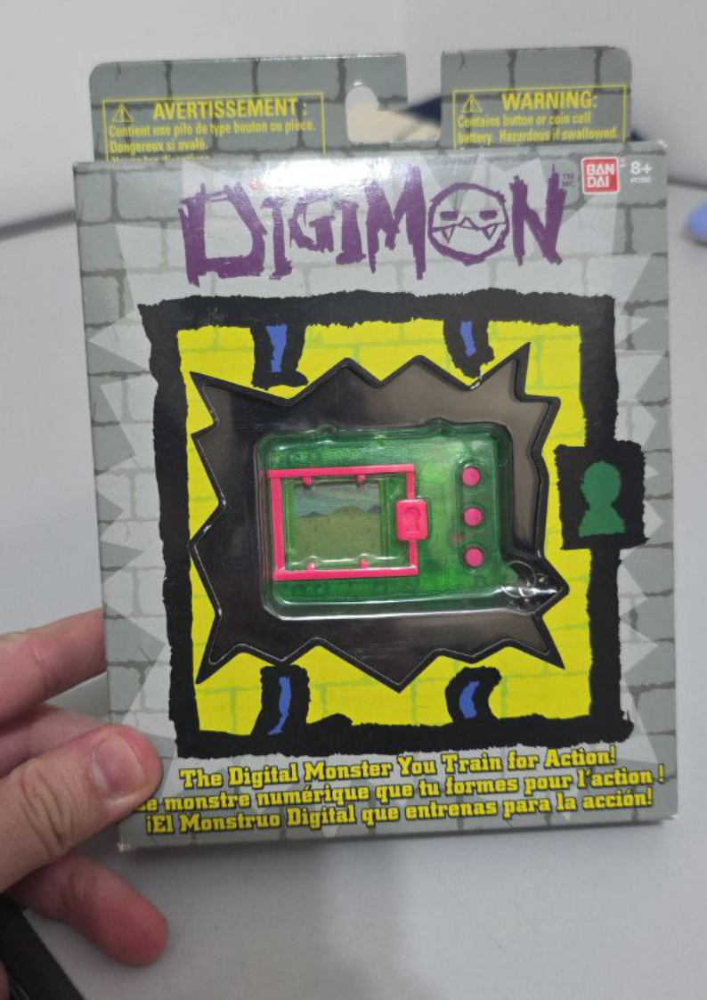
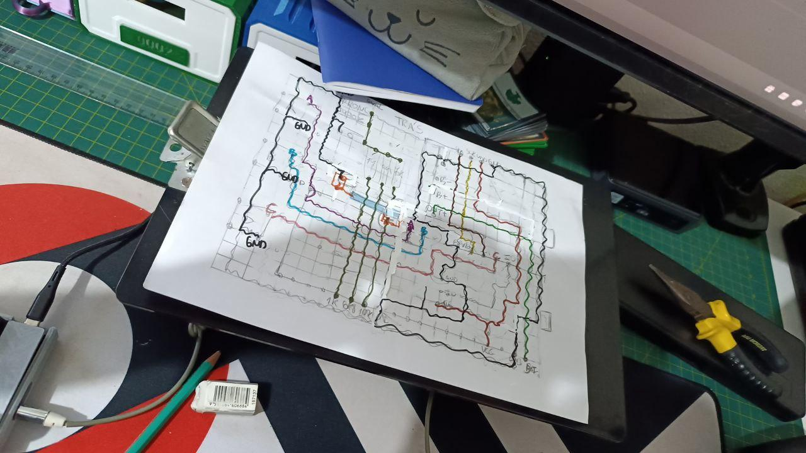
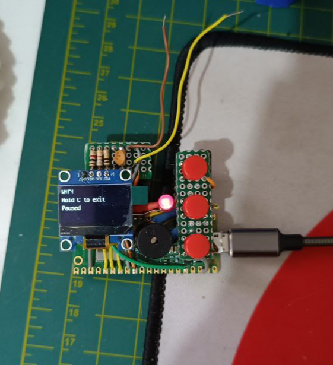
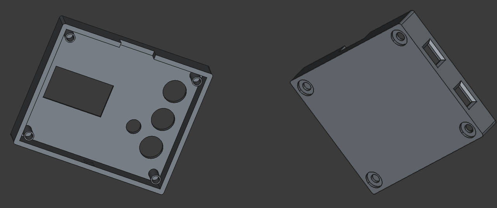
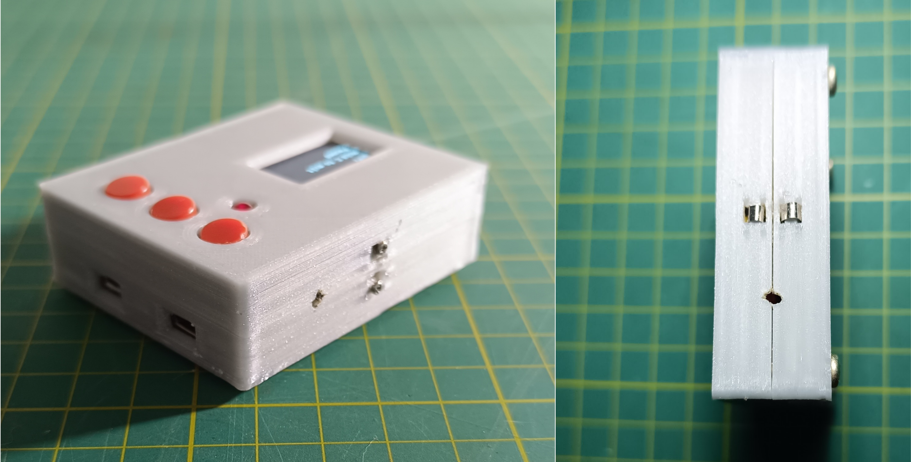
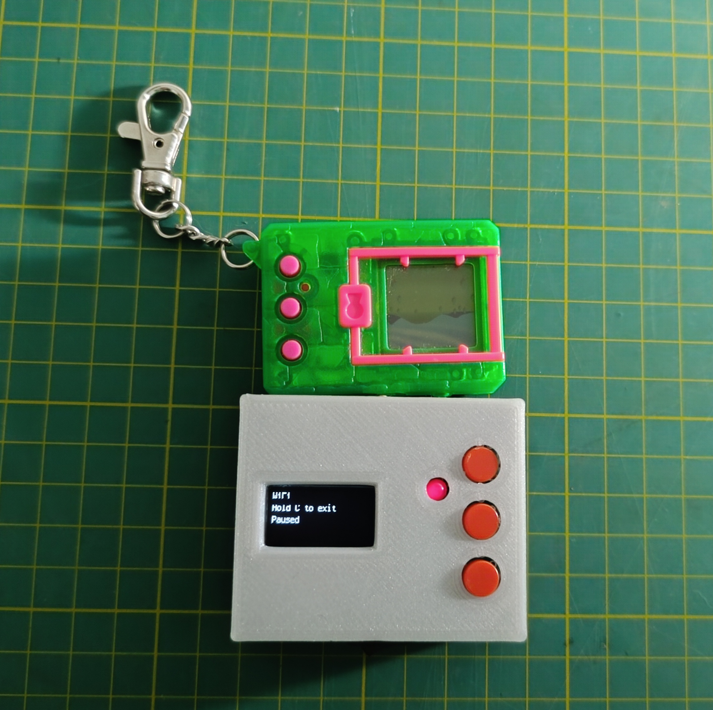

WifiCom
My friend Lucas introduced me to the world of Digimon V-Pets by lending me a DM20 to play with.

The idea was to build a WifiCom, which is a physical device that uses a Raspberry Pi Pico W and some electronic components (OLED display, buttons, buzzer) to connect with the V-Pet in online applications such as w0rld.
Of course, I got super excited about building a WifiCom, since it would help me improve my circuit assembly skills, as well as 3D modeling for making the case.
Assembly and setup
The first step was assembling the circuit on a breadboard. On the WifiCom website, there’s the circuit schematic with several modules. For the DM20, I only used the prongs module (the metal contacts at the top of the V-Pet used for communication). Assembly was pretty simple since the circuit isn’t very complex.
After assembling the circuit, you need to configure the firmware on the board. First, I installed CircuitPython 9.2.8 on the Raspberry Pi Pico W. Then, I used the wificom-update-tool script to install the WifiCom firmware on the device.
The last step was editing the configuration file (secrets.json). This file contains the SSID and password for the WiFi network, as well as the WifiCom access keys (available on the dashboard after creating an account).
Time to test the circuit: I connected the jumpers to the V-Pet prongs, summoned my Agumon inside w0rld, and it worked!

Planning the circuit board
My plan was to transfer the circuit to a double-sided perfboard. It was my first time doing this, and I immediately realized how challenging it would be to fit all the components in a compact way.
I spent several days planning the circuit layout, sketching the traces and component placement on paper.

Eventually, I gave up on squeezing everything together and decided to make a modular circuit: one board for the buttons and another for the prongs module. The other components would be fixed directly to the case.
I cut the board and soldered the components, trimming the wires to the exact length so everything would fit neatly. I tested the circuit, and everything worked perfectly.

Designing the case
Ever since I bought my 3D printer, my goal was to learn modeling with FreeCAD, and I had just started working on that. This project was my first chance to put my new skills into practice.
I designed a two-piece case fastened with M3 screws. I cut openings for the OLED display, the LED, and the buttons, as well as the USB ports of the Raspberry Pi Pico W and the battery charging circuit. I also added a power switch at the bottom and a slot for the prongs circuit at the top.

I didn’t get the dimensions right on the first try, it took a few rounds of trial and error before I got the final piece. I ended up forgetting to add a hole for the V-Pet pin and had to make one manually.
Final result
With the circuit completed, the last step was deciding what to use for the prongs contact. My first attempt was using two screws, since I couldn’t find the nickel strip recommended by others who had built the project. After a lot of searching, I finally found it sold as 18650 battery welding strip. It looked much better with the nickel strip.

Finally, the WifiCom alongside the V-Pet. The size turned out similar, making it easy to connect the two.

This was one of the most complete projects I’ve ever done, since it involved everything from building the circuit to designing the case. I’m really happy with the result!